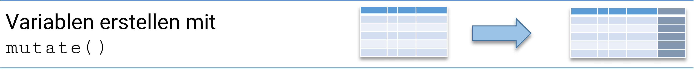
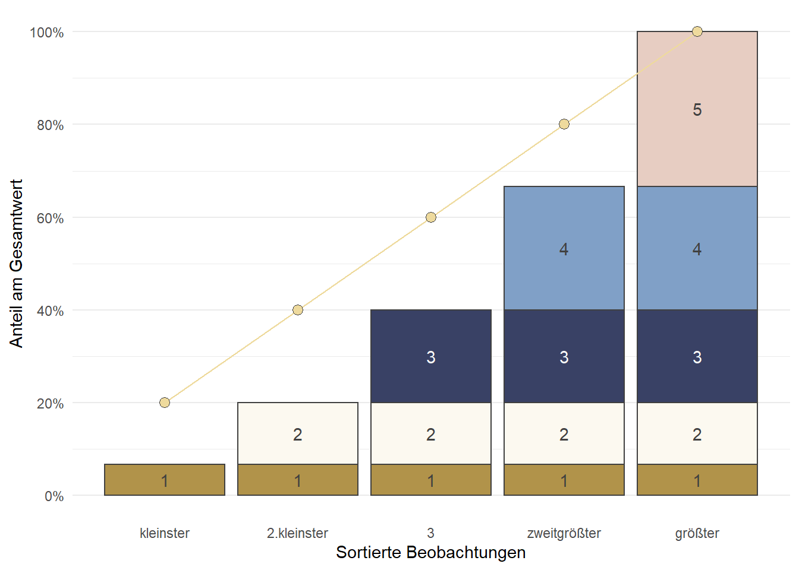

install.packages("haven") # falls nicht schon installiert 3 Einen Überblick erhalten
Nachdem wir Datensätze importiert haben, wollen wir nun einen Überblick erhalten. Jede statistische Auswertung startet mit einer Beschreibung der Variablen. In dieser Session werden wir sehen, wie wir uns mit Tabellen einen Überblick über die Informationen in einem Datensatz verschaffen können. Wir werden auch in dieser Session mit dem ETB2018 arbeiten. Wir starten also mit dem Einlesen der Daten:
library(haven) # datenimport für stata-datensätze
library(tidyverse) # tidyverse
etb18 <- read_dta("./data/BIBBBAuA_2018_suf1.0.dta")3.1 Häufigkeitsauszählungen
Uns stehen (mindestens) drei Befehle zur Verfügung, um eine Häufigkeitsauszählung zu erstellen:
table()xtabs()count()aus{dplyr}
Einfachster Befehl für die Auszählung von Häufigkeiten ist der table() Befehl. Beispielsweise mit der Variable m1202 zur Ausbildung der Befragten.
table(etb18$m1202)
-1 1 2 3 4
45 1091 9297 1725 7854 Die Syntax für xtabs() ist etwas anders, aber hier bekommen wir die Variablennamen nochmal angezeigt - der wesentliche Output ist aber der gleiche:
xtabs(~m1202,data=etb18)m1202
-1 1 2 3 4
45 1091 9297 1725 7854 Wir bekommen hier die absoluten Häufigkeiten angezeigt. In der ersten Zeile werden die verschiedenen Ausprägungen aufgelistet, in der zweiten Zeile stehen dann die Häufigkeiten.
Allerdings werden sowohl für table() als auch xabs() die labels in der Ausgabe erstmal ignoriert. Mit val_labels() aus dem Paket {labelled} können wir die Labels aus dem Datensatz abrufen. - bspw. steht 1 dafür, dass der*die Befragte die keine Berufsabschluss besitzt:
Code
install.packages("labelled") # nur einmal nötig
library(labelled)
val_labels(etb18$m1202) keine Angabe
-1
Ohne Berufsabschluss
1
duale o. schulische Berufsausbildung/einf.,mittl. Beamte
2
Aufstiegsfortbildung (Meister, Techniker, kfm. AFB u.ä.)
3
Fachhochschule, Universität/ geh., höhere Beamte
4 1091 Befragte haben keinen Berufsabschluss, 1725 Befragte haben Aufstiegsfortbildung usw. (Zu labels und die Arbeit mit value labels in R später mehr)
Mit count() aus {dplyr} bekommen wir die labels direkt angezeigt, auch hier verwenden wir wieder die Schreibweise mit der Pipe %>%:
etb18 %>% count(m1202)# A tibble: 5 × 2
m1202 n
<dbl+lbl> <int>
1 -1 [keine Angabe] 45
2 1 [Ohne Berufsabschluss] 1091
3 2 [duale o. schulische Berufsausbildung/einf.,mittl. Beamte] 9297
4 3 [Aufstiegsfortbildung (Meister, Techniker, kfm. AFB u.ä.)] 1725
5 4 [Fachhochschule, Universität/ geh., höhere Beamte] 7854Wir können auch Tabellen unter einem frei wählbaren Namen ablegen und später wieder aufrufen:
t1 <- xtabs(~m1202,etb18)
t2 <- etb18 %>% count(m1202)Wir sehen hier, dass die Tabelle mit xtabs() eine neue Objektform ist, ein table. Mit count() wird hingegen ein data.frame erstellt.
class(t1)[1] "xtabs" "table"class(t2)[1] "tbl_df" "tbl" "data.frame"3.2 Andere Tabellenwerte
Mit Hilfe weiterer Funktionen können wir die Häufigkeitstabellen jeweils anpassen:
prop.table(): relative Werte/Anteile
xtabs(~m1202,data=etb18) %>% prop.table(.) m1202
-1 1 2 3 4
0.002248651 0.054517290 0.464571257 0.086198281 0.392464521 0.225% aller Befragten haben keine Berufsausbildung.
cumsum(): kumulierte Werte
xtabs(~m1202,data=etb18) %>% cumsum(.) -1 1 2 3 4
45 1136 10433 12158 20012 1136 Befragte haben eine duale Berufsausbildung oder keine Berufsausbildung.
prop.table()mitcumsum(): kumulierte relative Häufigkeiten
xtabs(~m1202,data=etb18) %>% prop.table() %>% cumsum() -1 1 2 3 4
0.002248651 0.056765940 0.521337198 0.607535479 1.000000000 5.677% aller Befragten haben eine duale Berufsausbildung oder keine Berufsausbildung.
3.3 Kontingenztabellen
Aus Kontingenztabellen erfahren wir, wie häufig Merkmalskombinationen auftreten. Auch für Kontingenztabellen können wir table() verwenden. Zum Beispiel können wir uns eine Tabelle anzeigen lassen, die uns die Häufigkeiten des Familienstatus getrennt nach Geschlechtern zeigt:
table(etb18$S1, etb18$m1202)
-1 1 2 3 4
1 21 594 4371 1073 4015
2 24 497 4926 652 3839xtabs(~S1+m1202, data = etb18) m1202
S1 -1 1 2 3 4
1 21 594 4371 1073 4015
2 24 497 4926 652 3839Wir erkennen aus dieser Tabelle beispielsweise, dass 4926 Befragte weiblich (S1=2) und ohne Berufsabschluss (m1202 = 5) sind.
Hier ist xtabs() informativer als table(). Hier werden die Spalten und Zeilen beschriftet. Der Übersichtlichkeit halber verwende ich meistens xtabs(), alle Operationen sind aber genauso auch mit table() möglich.
3.3.1 Übung
3.4 Fehlende Werte in R: NA
Um die Werte mit -1 auch in R als fehlende Angabe zu kennzeichnen, müssen wir sie in etb18 auf NA setzen. Dazu rufen wir etb18$m1202 auf und filtern mit [] nur die Werte für m1202 gleich -1 heraus. Im vorherigen Kapitel haben wir kennengelernt, dass wir so spezifische Werte aufrufen können:
etb18$m1202[etb18$m1202 == -1] # nur m1202 = -1 aufrufen<labelled<double>[45]>: Höchster Ausbildungsabschluss
[1] -1 -1 -1 -1 -1 -1 -1 -1 -1 -1 -1 -1 -1 -1 -1 -1 -1 -1 -1 -1 -1 -1 -1 -1 -1
[26] -1 -1 -1 -1 -1 -1 -1 -1 -1 -1 -1 -1 -1 -1 -1 -1 -1 -1 -1 -1
Labels:
value label
-1 keine Angabe
1 Ohne Berufsabschluss
2 duale o. schulische Berufsausbildung/einf.,mittl. Beamte
3 Aufstiegsfortbildung (Meister, Techniker, kfm. AFB u.ä.)
4 Fachhochschule, Universität/ geh., höhere Beamte(Hier bekommen wir nochmal die Labels ausgespuckt, was etwas suboptimal für die Übersichtlichkeit ist.)
Wenn wir daran mit <- einen neuen Wert angeben, werden die aufgerufenen Werte damit überschrieben - hier überschreiben wir also alle Werte für m1202 == -1 mit NA:
etb18$m1202[etb18$m1202 == -1] <- NANA ist in der R der Code für fehlende Angaben, sie werden dann in xtabs() nicht aufgeführt:
xtabs(~m1202,data=etb18)m1202
1 2 3 4
1091 9297 1725 7854 Wir können aber mit der Option addNA = TRUE die Auszählung von NA explizit anfordern:
xtabs(~m1202,data=etb18,addNA = T)m1202
1 2 3 4 <NA>
1091 9297 1725 7854 45 In count() wird NA auch mit ausgezählt:
etb18 %>% count(m1202)# A tibble: 5 × 2
m1202 n
<dbl+lbl> <int>
1 1 [Ohne Berufsabschluss] 1091
2 2 [duale o. schulische Berufsausbildung/einf.,mittl. Beamte] 9297
3 3 [Aufstiegsfortbildung (Meister, Techniker, kfm. AFB u.ä.)] 1725
4 4 [Fachhochschule, Universität/ geh., höhere Beamte] 7854
5 NA 45Möchten wir das umgehen, nehmen wir wieder filter() zu Hilfe - mit is.na() können wir NA identifizieren. Durch Voranstellen von ! können wir damit anfordern, dass alle nicht-NA-Werte mit TRUE behalten werden:
etb18 %>% filter(!is.na(m1202)) %>% count(m1202)# A tibble: 4 × 2
m1202 n
<dbl+lbl> <int>
1 1 [Ohne Berufsabschluss] 1091
2 2 [duale o. schulische Berufsausbildung/einf.,mittl. Beamte] 9297
3 3 [Aufstiegsfortbildung (Meister, Techniker, kfm. AFB u.ä.)] 1725
4 4 [Fachhochschule, Universität/ geh., höhere Beamte] 7854Mehr zu fehlenden Werten findet sich beispielsweise im The missing book von Nicholas Tierney & Allison Horst.
3.4.1 Übung
3.5 Mehrere Kennzahlen in einer Tabelle
Aus Stata kennen viele sicherlich folgende Ansicht mit tab m1202:
Höchster Ausbildungsabschluss | Freq. Percent Cum.
----------------------------------------+-----------------------------------
Ohne Berufsabschluss | 1,091 5.46 5.46
duale o. schulische Berufsausbildung/ei | 9,297 46.56 52.03
Aufstiegsfortbildung (Meister, Technike | 1,725 8.64 60.67
Fachhochschule, Universität/ geh., höhe | 7,854 39.33 100.00
----------------------------------------+-----------------------------------
Total | 19,967 100.00In R hat ein table() oder xtabs() immer nur eine Art von Kennzahlen. Da wir aber mit count() die Auszählungen als data.frame() erhalten, können wir die relativen und kumulierten Häufigkeiten einfach als neue Variablen anfügen. Dabei hilft uns mutate(): mit mutate(neu_variable = ) können wir neue Variablen in einen data.frame() hinzufügen:

mutate() entspricht also dat1$var <- ...., das wir im vorherigen Kapitel kennen gelernt hatten. Allerdings können wir mit mutate() einfacher in einer Pipe-Kette arbeiten (und außerdem einige weitere Operationen einfacher erledigen - dazu später mehr).
Um also eine neue Spalte pctin unseren data.frame mit den Auszählungen einzufügen gehen wir wie folgt vor:
etb18 %>%
count(m1202) # ausgangsbefehl# A tibble: 5 × 2
m1202 n
<dbl+lbl> <int>
1 1 [Ohne Berufsabschluss] 1091
2 2 [duale o. schulische Berufsausbildung/einf.,mittl. Beamte] 9297
3 3 [Aufstiegsfortbildung (Meister, Techniker, kfm. AFB u.ä.)] 1725
4 4 [Fachhochschule, Universität/ geh., höhere Beamte] 7854
5 NA 45etb18 %>%
count(m1202) %>%
mutate(pct= prop.table(n)*100) # erweitert um pct# A tibble: 5 × 3
m1202 n pct
<dbl+lbl> <int> <dbl>
1 1 [Ohne Berufsabschluss] 1091 5.45
2 2 [duale o. schulische Berufsausbildung/einf.,mittl. Beamte] 9297 46.5
3 3 [Aufstiegsfortbildung (Meister, Techniker, kfm. AFB u.ä.)] 1725 8.62
4 4 [Fachhochschule, Universität/ geh., höhere Beamte] 7854 39.2
5 NA 45 0.225etb18 %>%
count(m1202) %>%
mutate(pct= prop.table(n)*100,
Cum = cumsum(pct)) # A tibble: 5 × 4
m1202 n pct Cum
<dbl+lbl> <int> <dbl> <dbl>
1 1 [Ohne Berufsabschluss] 1091 5.45 5.45
2 2 [duale o. schulische Berufsausbildung/einf.,mittl. Bea… 9297 46.5 51.9
3 3 [Aufstiegsfortbildung (Meister, Techniker, kfm. AFB u.… 1725 8.62 60.5
4 4 [Fachhochschule, Universität/ geh., höhere Beamte] 7854 39.2 99.8
5 NA 45 0.225 100 Der Punkt . steht jeweils für das Ergebnis des vorherigen Schritts. Hier also:
- Erstelle die Häufigkeitstablle für
m1202und dann (%>%) - Berechne aus
ndie relativen Häufigkeiten und dann (%>%) - Berechne dafür die kumulierten Werte basierend auf
pctund dann (%>%) - Runde das Ergebnis auf 3 Nachkommastellen
Etwas störend ist aber noch das NA, die für fehlende Angaben steht und nicht berücksichtigt werden soll. Das können wir einfach !is.na() in filter() ausschließen:
etb18 %>%
filter(!is.na(m1202)) %>%
count(m1202) %>%
mutate(pct= prop.table(n)*100,
Cum = cumsum(pct)) # A tibble: 4 × 4
m1202 n pct Cum
<dbl+lbl> <int> <dbl> <dbl>
1 1 [Ohne Berufsabschluss] 1091 5.46 5.46
2 2 [duale o. schulische Berufsausbildung/einf.,mittl. Beamt… 9297 46.6 52.0
3 3 [Aufstiegsfortbildung (Meister, Techniker, kfm. AFB u.ä.… 1725 8.64 60.7
4 4 [Fachhochschule, Universität/ geh., höhere Beamte] 7854 39.3 100 3.6 Kontingenztabellen mit count()
Für eine Kontingenztabelle mit count() geben wir einfach die interessierenden Variablen in count() an. Das Ergebnis wird immer im “long shape” Format ausgegeben:
etb18 %>%
filter(!is.na(m1202)) %>%
count(m1202,S1)# A tibble: 8 × 3
m1202 S1 n
<dbl+lbl> <dbl+lbl> <int>
1 1 [Ohne Berufsabschluss] 1 [männlic… 594
2 1 [Ohne Berufsabschluss] 2 [weiblic… 497
3 2 [duale o. schulische Berufsausbildung/einf.,mittl. Beamte] 1 [männlic… 4371
4 2 [duale o. schulische Berufsausbildung/einf.,mittl. Beamte] 2 [weiblic… 4926
5 3 [Aufstiegsfortbildung (Meister, Techniker, kfm. AFB u.ä.)] 1 [männlic… 1073
6 3 [Aufstiegsfortbildung (Meister, Techniker, kfm. AFB u.ä.)] 2 [weiblic… 652
7 4 [Fachhochschule, Universität/ geh., höhere Beamte] 1 [männlic… 4015
8 4 [Fachhochschule, Universität/ geh., höhere Beamte] 2 [weiblic… 3839Auch hier können wir wie oben die relativen und kumulierten relativen Häufigkeiten anfügen:
etb18 %>%
filter(!is.na(m1202)) %>%
count(m1202,S1) %>%
mutate(pct= prop.table(n)*100) # A tibble: 8 × 4
m1202 S1 n pct
<dbl+lbl> <dbl+l> <int> <dbl>
1 1 [Ohne Berufsabschluss] 1 [män… 594 2.97
2 1 [Ohne Berufsabschluss] 2 [wei… 497 2.49
3 2 [duale o. schulische Berufsausbildung/einf.,mittl. Beam… 1 [män… 4371 21.9
4 2 [duale o. schulische Berufsausbildung/einf.,mittl. Beam… 2 [wei… 4926 24.7
5 3 [Aufstiegsfortbildung (Meister, Techniker, kfm. AFB u.ä… 1 [män… 1073 5.37
6 3 [Aufstiegsfortbildung (Meister, Techniker, kfm. AFB u.ä… 2 [wei… 652 3.27
7 4 [Fachhochschule, Universität/ geh., höhere Beamte] 1 [män… 4015 20.1
8 4 [Fachhochschule, Universität/ geh., höhere Beamte] 2 [wei… 3839 19.2 Was aber wenn wir jetzt die Anteile innerhalb von Männern und Frauen möchten? Hier hilft uns group_by() weiter:
etb18 %>%
filter(!is.na(m1202)) %>%
count(m1202,S1) %>%
group_by(S1) %>%
mutate(pct_gender = prop.table(n)) # A tibble: 8 × 4
# Groups: S1 [2]
m1202 S1 n pct_g…¹
<dbl+lbl> <dbl+l> <int> <dbl>
1 1 [Ohne Berufsabschluss] 1 [män… 594 0.0591
2 1 [Ohne Berufsabschluss] 2 [wei… 497 0.0501
3 2 [duale o. schulische Berufsausbildung/einf.,mittl. Be… 1 [män… 4371 0.435
4 2 [duale o. schulische Berufsausbildung/einf.,mittl. Be… 2 [wei… 4926 0.497
5 3 [Aufstiegsfortbildung (Meister, Techniker, kfm. AFB u… 1 [män… 1073 0.107
6 3 [Aufstiegsfortbildung (Meister, Techniker, kfm. AFB u… 2 [wei… 652 0.0658
7 4 [Fachhochschule, Universität/ geh., höhere Beamte] 1 [män… 4015 0.399
8 4 [Fachhochschule, Universität/ geh., höhere Beamte] 2 [wei… 3839 0.387
# … with abbreviated variable name ¹pct_gender49.7% der Befragten Frauen haben eine duale oder schule Berufsausbildung.
Wir können dann auch mit einem angehängten filter() nur die beiden Zeilen m1202 == 2 ausgeben lassen:
etb18 %>%
filter(!is.na(m1202)) %>%
count(m1202,S1) %>%
group_by(S1) %>%
mutate(pct_gender = prop.table(n)) %>%
filter(m1202 == 2)# A tibble: 2 × 4
# Groups: S1 [2]
m1202 S1 n pct_g…¹
<dbl+lbl> <dbl+l> <int> <dbl>
1 2 [duale o. schulische Berufsausbildung/einf.,mittl. Be… 1 [män… 4371 0.435
2 2 [duale o. schulische Berufsausbildung/einf.,mittl. Be… 2 [wei… 4926 0.497
# … with abbreviated variable name ¹pct_gender…wir können diese Ausgaben natürlich immer auch ablegen:
tab_aus_gender <-
etb18 %>%
filter(!is.na(m1202)) %>%
count(m1202,S1) %>%
group_by(S1) %>%
mutate(pct_gender = prop.table(n))
class(tab_aus_gender)[1] "grouped_df" "tbl_df" "tbl" "data.frame"…und dann wieder weiterverwenden
tab_aus_gender %>% filter(m1202 == 3)# A tibble: 2 × 4
# Groups: S1 [2]
m1202 S1 n pct_g…¹
<dbl+lbl> <dbl+l> <int> <dbl>
1 3 [Aufstiegsfortbildung (Meister, Techniker, kfm. AFB u… 1 [män… 1073 0.107
2 3 [Aufstiegsfortbildung (Meister, Techniker, kfm. AFB u… 2 [wei… 652 0.0658
# … with abbreviated variable name ¹pct_gender3.6.1 Übung
Tip
Bei langen Tabellen werden nicht alle Werte ausgegeben, sondern nur die ersten Zeilen. Um hier alle Werte zu bekommen, hilft print(n=Inf):
etb18 %>% count(Bula,S1) # wird abgeschnitten
etb18 %>% count(Bula,S1) %>% print(n=Inf) # alle Werte werden gezeigt3.7 Lage- & Konzentrationsmaße
Lagemaße sind statische Kennzahlen zur Beschreibung von metrischen Variablen, wie beispielsweise das arithmetische Mittel oder der Median. Einen Überblick bietet summary():
summary(etb18$F518_SUF) Min. 1st Qu. Median Mean 3rd Qu. Max.
1 2200 3500 19811 6000 99999 Allerdings gibt es im Datensatz keine Befragten mit einem Bruttoverdienst von 99999 EUR. 99999 ist der Zahlencode keine Angabe , 99998 für weiß nicht. Um aussagekräftige Werte zu bekommen, müssen wir diese Werte mit NA überschreiben:
etb18$F518_SUF[etb18$F518_SUF %in% 99998:99999] <- NA # missings überschreibensummary(etb18$F518_SUF) Min. 1st Qu. Median Mean 3rd Qu. Max. NA's
1 2000 3000 3532 4200 72000 3377 Wir können aber auch bestimmte Kennzahlen anfordern sehen uns die Bruttoverdienste der Befragten zu beschreiben:
- Minimum und Maximum:
min(),max() - arithm. Mittel:
mean() - Median:
median() - Quantile:
quantile() - Varianz:
var() - Standardabweichung:
sd() - Gini-Koeffizient:
Giniaus dem Paket{ineq}
Wenn eine Variable NA enthält, müssen diese explizit ignoriert werden - ansonsten wird nur NA ausgegeben:
mean(etb18$F518_SUF)[1] NADeshalb müssen wir die Option na.rm = T angeben:
mean(etb18$F518_SUF,na.rm = T)[1] 3532.109Ein Quantil einer Verteilung trennt die Daten so in zwei Teile, dass x% der Daten darunter und 100-x% darüber liegen. Mit quantile()wir durch Angabe in der Option probs = beliebige Quantilgrenzen anfordern, zB. für die 40%-Quantilgrenze:
quantile(etb18$F518_SUF,probs = .4, na.rm = T) 40%
2550 Den Gini-Koeffizienten können wir mit Gini() aus dem Paket ineq berechnen:
install.packages("ineq") # einmal installierenlibrary(ineq) # ineq laden
Gini(etb18$F518_SUF)[1] 0.35435093.7.1 Kennzahlentabelle mit summarise
Mit Hilfe von summarise() aus {dplyr} können wir ein eigenes summary() bauen:
etb18 %>% summarise(Minimum = min(F518_SUF,na.rm = T),
Median = median(F518_SUF,na.rm = T),
Mittelwert = mean(F518_SUF,na.rm = T),
Maximum = max(F518_SUF,na.rm = T),
Gini = Gini(F518_SUF))# A tibble: 1 × 5
Minimum Median Mittelwert Maximum Gini
<dbl+lbl> <dbl> <dbl> <dbl+lbl> <dbl>
1 1 3000 3532. 72000 0.354Der Vorteil des Ganzen wird im nächsten Schritt klarer.
3.7.2 Lage- und Streuungsmaße vergleichen
Häufig werden diese Kennzahlen erst im Vergleich richtig spannend, dafür hilft uns das group_by() Argument und summarise():
etb18 %>%
group_by(Bula) %>%
summarise(mean_inc = mean(F518_SUF, na.rm = T) )# A tibble: 16 × 2
Bula mean_inc
<dbl+lbl> <dbl>
1 1 [Schleswig-Holstein] 3495.
2 2 [Hamburg] 3837.
3 3 [Niedersachsen] 3350.
4 4 [Bremen] 3767.
5 5 [Nordrhein-Westfalen] 3673.
6 6 [Hessen] 3860.
7 7 [Rheinland-Pfalz] 3859.
8 8 [Baden-Württemberg] 3691.
9 9 [Bayern] 3634.
10 10 [Saarland] 3510.
11 11 [Berlin] 3528.
12 12 [Brandenburg] 2960.
13 13 [Mecklenburg-Vorpommern] 3034.
14 14 [Sachsen] 2897.
15 15 [Sachsen-Anhalt] 2757.
16 16 [Thüringen] 2835.etb18 %>%
group_by(Bula) %>%
summarise(mean_inc = mean(F518_SUF, na.rm = T),
median_inc = median(F518_SUF, na.rm = T))# A tibble: 16 × 3
Bula mean_inc median_inc
<dbl+lbl> <dbl> <dbl>
1 1 [Schleswig-Holstein] 3495. 2900
2 2 [Hamburg] 3837. 3100
3 3 [Niedersachsen] 3350. 3000
4 4 [Bremen] 3767. 3300
5 5 [Nordrhein-Westfalen] 3673. 3200
6 6 [Hessen] 3860. 3300
7 7 [Rheinland-Pfalz] 3859. 3000
8 8 [Baden-Württemberg] 3691. 3100
9 9 [Bayern] 3634. 3000
10 10 [Saarland] 3510. 3000
11 11 [Berlin] 3528. 2900
12 12 [Brandenburg] 2960. 2700
13 13 [Mecklenburg-Vorpommern] 3034. 2600
14 14 [Sachsen] 2897. 2500
15 15 [Sachsen-Anhalt] 2757. 2400
16 16 [Thüringen] 2835. 2500etb18 %>%
filter(Bula %in% c(3,5)) %>%
group_by(Bula) %>%
summarise(mean_inc = mean(F518_SUF, na.rm = T) )# A tibble: 2 × 2
Bula mean_inc
<dbl+lbl> <dbl>
1 3 [Niedersachsen] 3350.
2 5 [Nordrhein-Westfalen] 3673.3.7.3 Übung
3.8 Übungen
Alle Übungen beziehen sich auf die Erwerbstätigenbefragung:
etb18 <- read_dta("./data/BIBBBAuA_2018_suf1.0.dta")3.8.1 Übung 1
Wir interessieren uns für die Variable gkpol, welche die Größe der Wohngemeinde der Befragten enthält:
| label | value |
|---|---|
| unter 2.000 Einwohner | 1 |
| 2.000 bis unter 5.000 Einwohner | 2 |
| 5.000 bis unter 20.000 Einwohner | 3 |
| 20.000 bis unter 50.000 Einwohner | 4 |
| 50.000 bis unter 100.000 Einwohner | 5 |
| 100.000 bis unter 500.000 Einwohner | 6 |
| 500.000 und mehr Einwohner | 7 |
- Lassen Sie sich eine Tabelle mit den absoluten Häufigkeiten anzeigen, nutzen Sie dafür sowohl
table(),xtabs()als auchcount()(Denken Sie daran,{tidyverse}zu laden fürcount()). - Lassen Sie sich der relativen Häufigkeiten (Anteile) ausgeben (nutzen sie entweder
table()oderxtabs()) - Erstellen Sie eine Kontingenztabelle, indem Sie neben
gkpolauch das GeschlechtS1(2 = Frauen, 1 = Männer) mit einbeziehen - Wie viel Prozent der Befragten sind Frauen, die in einer Gemeinde mit unter 2000 Einwohnern leben? Berechnen Sie die relativen Häufigkeiten.
3.8.2 Übung 2
Wir interessieren uns für die Variable S3. Die Variable S3 erfasst den höchsten allgemeinen Schulabschluss der Befragten. Erstellen Sie mit Hilfe von count() eine Tabelle mit absoluten, relativen und kumulierten relativen Häufigkeiten.
- Erstellen Sie zunächst eine Auszählung mit
count()und fügen Sie dann die relativen und kumulierten relativen Häufigkeiten hinzu. - Profi-Aufgabe: Ersetzen Sie ggf. Werte mit
NAund lassen Sie sich die Tabelle erneut ausgeben. Siehe hier
3.8.3 Übung 3
- Erstellen Sie eine vollständige Häufigkeitstabelle für die Variable
gkpolund das Geschlecht (S1)- Verwenden Sie die Befehle aus Übung 2- was müssen Sie anpassen, um die Tabelle für
gkpol - Erweitern Sie jetzt die Auszählung um
S1 - Berechnen Sie die Anteile von
gkpolinnerhalb von Männern und Frauen. - Wie viel Prozent der Frauen leben in einer Gemeinde mit unter 2000 Einwohnern?
- Profi-Aufgabe: Wie viel Prozent der Befragten, die in einer Gemeinde mit unter 2000 Einwohnern leben, sind Frauen? (
S1= 2,gkpol= 1)
- Verwenden Sie die Befehle aus Übung 2- was müssen Sie anpassen, um die Tabelle für
3.8.4 Übung 4
Beschreiben Sie das Alter der Befragten (zpalter) mit summary und erstellen Sie selbst einen Überblick mit Hilfe von summarise(), der einen Vergleich des Befragtenalters nach Gemeindegrößen erlaubt.
- Überschreiben Sie zunächst die Missings mit
NA:
etb18$zpalter[etb18$zpalter>100] <- NA- Erstellen Sie einen Überblick mit
summary() - Erstellen Sie einen Überblick mit dem Minimum, Median, arith. Mittel, Varianz und Maximum der Alterswerte mit Hilfe von
summarise() - Erweitern Sie diesen Überblick dann so, dass sie einen Vergleich der Kennzahlen für die verschieden
gkpol-Kategorien ausgegeben bekommen.
3.9 Hinweise
3.9.1 Runden mit round()
Erläuterung: Sie können mit round(x , 3) Werte auf eine gewisse Zahl von Ziffern runden. Die zweite Zahl in der Klammer (nach dem Komma) gibt an, wieviele Dezimalstellen wir möchten:
round(21.12121123,digits = 3)[1] 21.121round(21.12121123,digits = 5)[1] 21.12121round(21.12121123,digits = 0)[1] 21Wir können also die relativen Häufigkeiten runden und so die Tabelle von oben übersichtlicher machen:
xtabs(~S1+m1202, data = etb18) %>%
prop.table(.,margin = 1) %>%
round(.,3) m1202
S1 1 2 3 4
1 0.059 0.435 0.107 0.399
2 0.050 0.497 0.066 0.3873.9.2 Wie kann ich mir in R automatisch die häufigste/seltenste Ausprägung ausgeben lassen?
t4 <- table(etb18$zpalter)
t4[which(t4 == max(t4))] # Modus 54
790 54 ist mit 790 Befragten die häufigste Ausprägung.
3.9.3 Gini-Koeffizient
Zur Beschreibung der Verteilung von Einkommens- und Vermögensdaten wird häufig der Gini-Koeffizient verwendet. Der Gini-Koeffizient beruht auf der Fläche zwischen der Lorenzkurve und der Gleichverteilung. Auf der x-Achse werden die kumulierten Perzentile der Befragten abgetragen, auf der y-Achse die Perzentile des HH-Einkommens:
